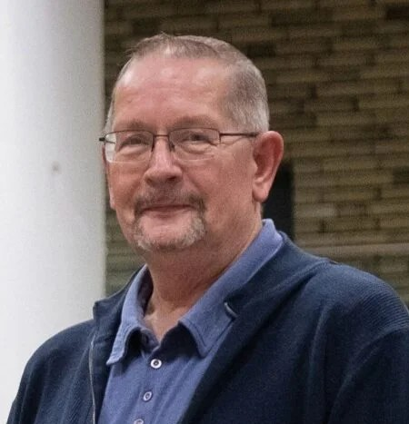

Onze Mensen
Gedreven en betrokken, met hart voor Wageningen.
De Raadsleden

Rien Bor
Fractievoorzitter / Raadslid

Klaas de Weerd
Raadslid

Henk van Beek
Raadslid

Otto Vleemingen
Raadslid
Steunfractie en Bestuur

Marjolein van der Vlist
Steunfractielid
Jelle de Kok
Voorzitter
Jos Kalb
Secretaris
Titus van der Spek
Penningmeester